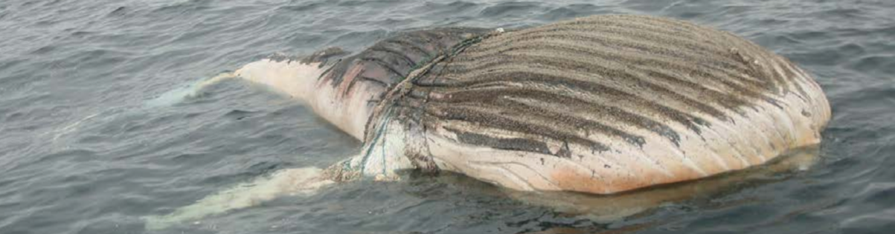

圖一、於2013年9月14號於Machalilla 國家公園發現之貝尼龍繩纏繞的座頭鯨屍體（Castro and Waerebeek 2019）。
漁業干擾
漁業活動進行時，可能會誤捕鯨豚或是出現漁網產繞鯨豚的情況發生，2019年於厄瓜多爾海岸的擱淺鯨豚報告中指出，2001年6月至2017年3月間，130隻的鯨魚屍體中診斷出54例（38％）的死亡原因，其中最常見為被漁具纏繞而致死者（n=43），其中包含18隻座頭鯨（Megaptera novaeangliae）、7隻熱帶斑海豚（Stenella attenuata）、4隻真海豚（Delphinus delphis）、3隻侏儒抹香鯨（Kogia sima）（圖一、圖二）（Castro and Waerebeek 2019）
圖二、2001-2017年厄瓜多爾海岸發生之與漁網纏繞相關之鯨豚擱淺事件數量
軍事聲納影響
海底的聲納可能會干擾鯨豚的導航系統，另外鯨豚也可能因為躲避噪音而迷航，也有研究指出聲納可能造成鯨豚得到類似於減壓病徵（decompression sickness symptoms）或聽覺創傷（acoustic traumas）的 bubble lesions（Parsons et al. 2008）。有研究團隊比較了塞班島和提尼安島附近的喙鯨擱淺事件，和有使用反潛戰（antisubmarine warfare, ASW）中頻率聲納（mid-frequency active sonar, MFAS）的海軍活動時間，發現2006年6月至2019年1月發生的8起喙鯨擱淺案件中，有一半發生在海軍活動期間或之後的6天內（圖三），因此推測這些擱淺案件與ASW的活動相關（Simonis et al. 2020）。
圖三、於Guam 發⽣的喙鯨擱淺事件與⾺⾥雅納群島主要海軍訓練⾏動的時間線，其中以紅 ⾊標記與海軍聲納相關的擱淺事件。東部HARP(high-frequency acoustic recording package)記錄到的事件以深灰⾊表⽰，⻄部HARP 則以淺灰⾊表⽰，由Munger 等⼈和 Klinck 等⼈的發表則以無填充⽅框顯⽰。Zc 為柯⽒喙鯨（Ziphius cavirostris）的縮寫（Simonis et al. 2020）。
船隻撞擊事件
撞擊船隻可能造成鯨豚傷亡，且隨著海上交通增加、船舶速度與發動機的進步，對鯨豚的生存已形成巨大的威脅。而且評估船隻撞擊率有一定難度，因離岸較遠的地方較容易發生撞擊事件，且鯨豚與大型船隻的撞擊也不易被察覺，因此監測鯨豚的擱淺為評估的方法之一。如法國自1972年起，收集了位於地中海和大西洋沿岸的擱淺數據與範本，因此截至2017年，經由攝影和屍檢報告等，確認了51起船舶撞擊事件，其中在地中海地區尤其嚴重（圖四），約每五隻擱淺鯨豚就有被船隻撞擊之證據（Peltier et al. 2019）。另外如2019年10月於苗栗 通霄發現的雄性擱淺江豚，從透過其右側頭部和胸腔的多處骨折（圖五），被判斷可能因撞擊船隻後直接死亡（海洋保育署，2019）。
圖四、發生於法國地中海（Western Mediterranean Sea, WMS）、比斯開灣（Bay of Biscay, BB）、凱爾特海（Celtic Sea, CS）、英吉利北海（Channel-North Sea, CNS）沿岸，每十年間有致命船擊證據擱淺案數量（灰色）和擱淺總數量（黑色）的比較（Peltier et al. 2019）。
圖五、2019年10月於苗栗通霄發現的雄性擱淺江豚，其右側頭部和胸腔的多處骨折，可能因撞擊船隻而死亡（圖片來源：海洋保育署，全年度鯨豚擱淺報告，https://www.oca.gov. tw/ch/hom e.jsp?id=189& parentpath=0,6,185）。
圖六、2014年擱淺於阿根廷沿岸的幼年雄性南露脊鯨，腸道內的人造廢棄物（Alzugaray et al. 2020）。
海洋廢棄物汙染
人為廢棄物可能會經由攝取或纏繞使動物傷亡，當胃內含有大量無法消化的廢棄物時，會造成鯨豚營養不良，無法正常進食。如公視新聞於2015年報導的台中領航鯨擱淺事件，此隻未滿一歲的短肢領航鯨，胃袋內含有將近3公斤的塑膠袋（溫正衡，2015），而2019年的花蓮懷孕喙鯨也發現其為內含有大量麻布袋等廢棄物（海洋保育署，2019），2014年發生於阿根廷沿岸的幼年雄性南露脊鯨擱淺案件，腸道內也發現了人造廢棄物（圖六）（Alzugaray et al. 2020）。雖然攝食人造廢棄物可能不是造成鯨豚擱淺的直接原因，但勢必會對其身體狀況造成影響。
參考資料
- 溫正衡。2015年。台中擱淺領航鯨 死因竟是誤食垃圾撐死。公共電視新聞。https://new s.pts.org.tw/article/300919 （查詢日期：2021/6/1）
- 2019第一季鯨豚擱淺報告。2019年。海洋委員會海洋保育署。https://ww w.oca.gov.tw/ch/home.jsp?id=189&parentpath=0,6,185 (查詢日期:2021/6/1)
- 2019全年度鯨豚擱淺報告。2019年。海洋委員會海洋保育署。 https://ww w.oca.gov.tw/ch/home.jsp?id=189&parentpath=0,6,185 (查詢日期:2021/6/1)
- Alzugaray, L., Di Martino, M., Beltramino, L., Rowntree, V. J., Sironi, M., & Uhart, M. M. (2020). Anthropogenic debris in the digestive tract of a southern right whale (Eubalaena australis) stranded in Golfo Nuevo, Argentina. Marine Pollution Bulletin, 161, 111738.
- Castro, C. and Waerebeek, K. V. (2019). Strandings and mortality of cetaceans due to interactions with fishing nets in Ecuador, 2001− 2017, Document SC.
- Cordes, D. O. (1982). The causes of whale strandings. New Zealand Veterinary Journal, 30(3), 21-24.
- Hobson, M. (2021). Why do whales beach themselves? We’re partially to blame. National Geographic. https://www.nationalgeographic.com/animals/article/why -do-whales-beach-themselves (search data: 2021/6/1)
- Parsons, E. C. M., Dolman, S. J., Wright, A. J., Rose, N. A., & Burns, W. C. G. (2008). Navy sonar and cetaceans: Just how much does the gun need to smoke before we act?. Marine pollution bulletin, 56(7), 1248-1257.
- Peltier, H., A. Beaufils, C. Cesarini, W. Dabin, C. Dars, F. Demaret, F. Dhermain, G. Doremus, H. Labach, O. Van Canneyt and J. Spitz (2019). "Monitoring of Marine Mammal Strandings Along French Coasts Reveals the Importance of Ship Strikes on Large Cetaceans: A Challenge for the European Marine Strategy Framework Directive." Frontiers in Marine Science 6(486).